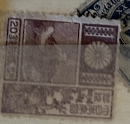
| SOURCE | TITLE| IMAGE MATCH | click to source page |
| eBay | Japan Japon Giappone F-VF Early Used Stamp A22P61F10886 | eBay | 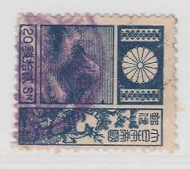 |
| eBay | JAPAN REVENUE Imperf IMPRINT Block{8} 1s Mint MNG Stamps Asia Collection SS4109 | eBay | 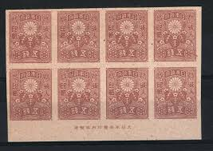 |
| SHIZUOKA GOURMET | Mount Fuji on Stamps 1: 1922~1934 | SHIZUOKA GOURMET | 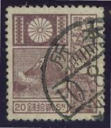 |
| eBay | Old Japan Revenue Stamps MNH Lots HG24 | eBay | 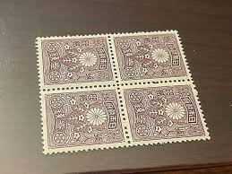 |
| Shopee Malaysia | Japan vintage used Stamp日本古典邮票 | Shopee Malaysia | 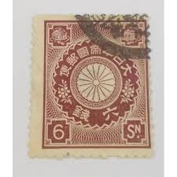 |
| Find Your Stamps Value | Value of japanese chrysanthemum series stamps | 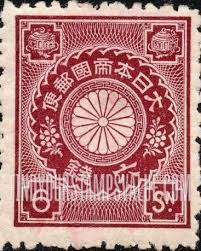 |
| Amazon.in | 1931 Japan Stamp - Mt Fuji and Deer : Amazon.in: Toys & Games | 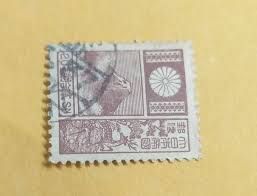 |
| HipStamp | Japan 1931 Used SC176 Mt Fuji and Deer - Violet 20 Japanese sen Vio*STOCK IMAGE* | Asia - Japan, General Issue Stamp / HipStamp | 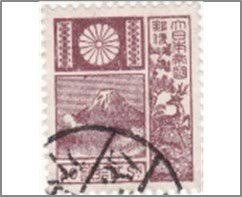 |
| Find Your Stamps Value | Value of Japan 2 sen stamps | 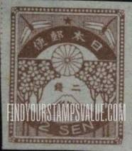 |
| Stamp Community Forum | Bells On Stamps: Need Help. - Page 6 - Stamp Community Forum | 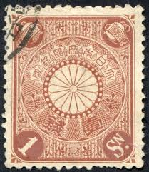 |
| PicClick | JAPAN 20 SEN ⭐ 1930 Mt Fuji Deer Series ⭐ Cancelled Used Watermarked $1.95 - PicClick | 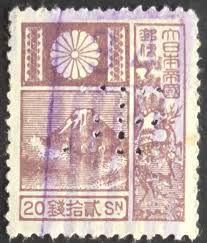 |
| eBay | Japan - 1929 Mount Fuji 20 SN | eBay Australia | 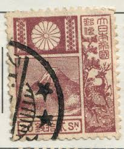 |
| PicClick | J1529 JAPAN 1929 MNH OG Fuji and Deer Sc#176a (Old Die) $19.99 - PicClick | 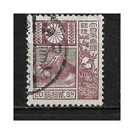 |
| eBay | Japan Cinderella stamp 3-8-22 revenue fiscal imperf pair no gum | eBay | 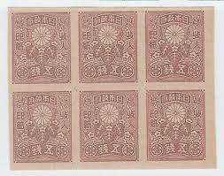 |
| eBay | Pre-Decimal Korean Stamps for sale | eBay | 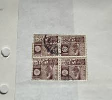 |
| Manchukuo Stamps | Manchukuo Stamps, Manchurian Local Overprints - Port Arthur & Darien (Former Kwantung Leased Territory) | 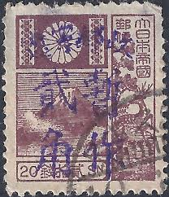 |
| DealBid | Recently Listed Listings in Stamps > Asia > Japan - Recently Listed | DealBid | 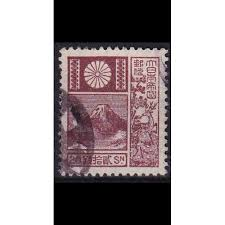 |
| Are there any stamps available around Sapporo? | 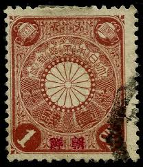 | |
| HipStamp | Japan 1930/37 Scott 176 used - 20s, Mount Fuji | Asia - Japan, General Issue Stamp / HipStamp | 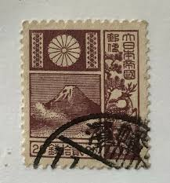 |
| Stampedia | stampedia JAPAN STAMP catalog | 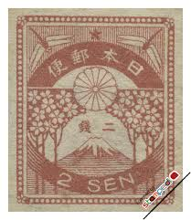 |
| Cherrystone Auctions | U.S. and Worldwide Stamps - July 16-17, 2008 - JAPAN | 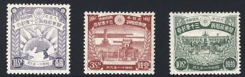 |
| Stampedia | stampedia JAPAN STAMP catalog | 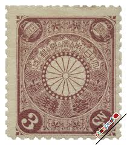 |
| eBay | Japan 1985 - Mihon Overprint - Specimen Overprint (1540-1543) Mint never Hinged | eBay | 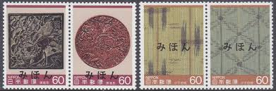 |
| Stamp Auction Network | catalog Level 3 | 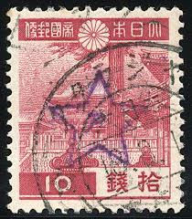 |
| Alamy | Postage stamp japan hi-res stock photography and images - Page 4 - Alamy | 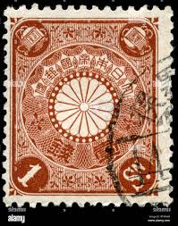 |
| eBay | Japan 1940s Stamp + Interesting "天下茶屋“ Postmark + Tea Topical +Uncommon | eBay | 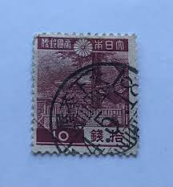 |
| HipStamp | Japan Stamp Chrysanthemum 6 Sen Used | Asia - Japan, Stamp / HipStamp | 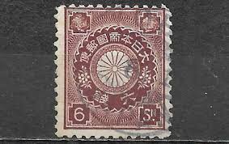 |
| ebid.net | Malta.SG266 1/4d Monument of the Great Siege,1565.Mounted Mint.Dec25c on eBid United Kingdom | 235484826 | 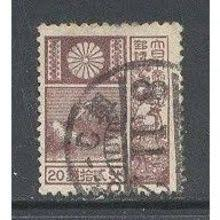 |
| Japanese stamps : r/stampcollecting | 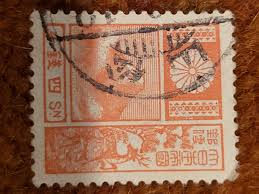 | |
| eBay | Japanese Deer Stamps for sale | eBay | 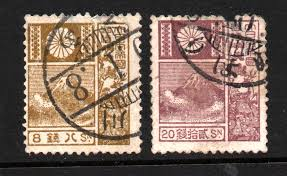 |
| Dreamstime.com | Mountain Fuji Deer Stock Photos - Free & Royalty-Free Stock Photos from Dreamstime | 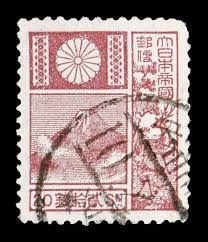 |
| ProBoards | Japan: Stamps | The Stamp Forum (TSF) | 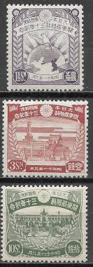 |
| eBay | japan 1923 Sc 165 pair of two,useful cancel m943 | eBay | 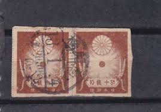 |
| Blogger.com | Blogart: Japan-1899-A Partial Set of Definitive Postage Stamps-Illustrated | 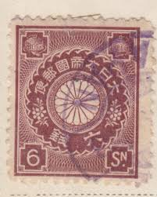 |
| Oakwood Auctions | Lot - Japan 1936 #227-#229 VF MNH | 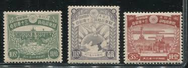 |
| HipStamp | Japan 176:20s Mt Fuji, used, F-VF | Asia - Japan, General Issue Stamp / HipStamp | 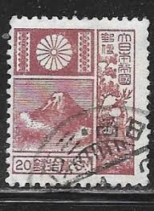 |
| eBay | Japan Cinderella stamp 3-8-22 revenue fiscal imperf pair no gum | eBay | 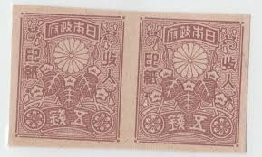 |
| eBay | JAPAN Early Used Stamp A5P14F39841 | eBay | 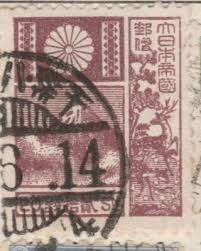 |
| lastdodo.com | Stamps from China - Japanese post offices Stamp catalogue - LastDodo | 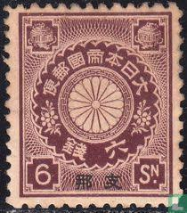 |
| eBay | Brown Pre-Decimal Japanese Stamps for sale | eBay | 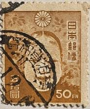 |
| Manchukuo Stamps | Understanding Manchukuo Postmarks, Cancels and Postmark Dates | 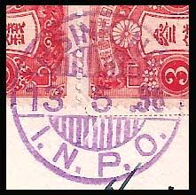 |
| eBay | Japan 107 used | eBay | 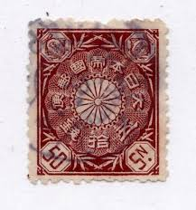 |
| What is the origin of this Japanese stamp? | 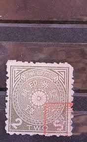 | |
| The Itty Bitty Stamp Company | Japan Scott # 351-353/355/358 Used – The Itty Bitty Stamp Company | 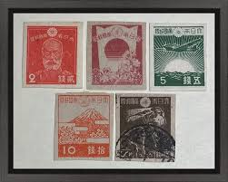 |
| eBay | Japan 1928 Sc#203 - 3s Enthronement Hall Kyoto Scrape 1928 cds Used | eBay | 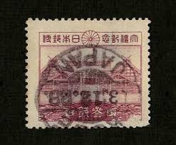 |
| Shutterstock | 52+ Thousand Tourist Stamps Royalty-Free Images, Stock Photos & Pictures | Shutterstock | 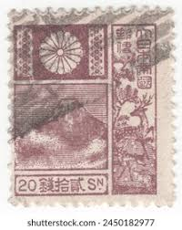 |
| These aren't your average stamps Japan,Korea, China Vietnam And a mystery oddity I can't stop staring at 📮🔥. : r/CollectiblesCorner | 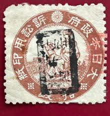 | |
| Stamp Auction Network | Shreves Philatelic Galleries, Inc. Sale - 72 Page 66 | 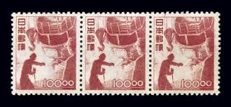 |
| Free stamp catalogue | Stamps from Japan - Freestampcatalogue.com - The free online stampcatalogue with over 500.000 stamps listed. | 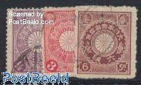 |
| eBay | F/VF (Fine/Very Fine) Blue Asian Stamps for sale | eBay | |
| Stamp Auction Network | Prices Realized | |
| Manchukuo Stamps | Manchukuo Stamps, Manchurian Local Overprints - Fang Cheng | |
| kalnieciai.lt | Japan occupation | |
| eBay | Deer Used Asian Stamps for sale | eBay | |
| Japan occupation stamp information needed | ||
| Colnect | Stamp: Chrysanthemum with Overprint (China - Japanese Post Office(Crysanthemum & Jingo Definitives Overprinted (1900-1908)) Mi:JP OC 2,Sn:JP OC 3,Yt:CN-JP 3,Sg:JP OC 3A,Sak:JP OC 3 📮 | |
| Shutterstock | Japan Circa 1952 Stamp Shows Miroku Stock Photo 183302813 | Shutterstock | |
| japanesephilately.com | Mt. Fuji Deer Series - Japanese Philately | |
| eBay | Japan 1936 Vintage 20sen Stamp Used wine red mt.fuji and deer | eBay | |
| eBay | Japan stamps 1913 MI 107 MLH VF | eBay |